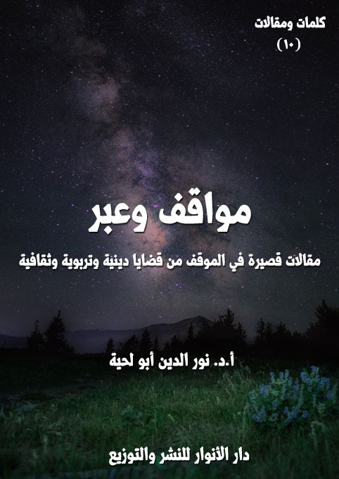

الكتاب: كلمات في الإيمان والاستقامة
الوصف: كلمات قصيرة حول الحقائق الإيمانية والقيم المرتبطة بها
السلسلة: كلمات ومقالات
المؤلف: أ. د. نور الدين أبو لحية
الناشر: دار الأنوار للنشر والتوزيع
الطبعة: الثانية، 1443 هـ
عدد الصفحات: 175
ISBN: 978-620-4-72225-2
لمطالعة الكتاب من تطبيق مؤلفاتي المجاني وهو أحسن وأيسر: هنا
يحوي هذا الكتاب مجموعة من الكلمات القصيرة التي نشرتها في أوقات مختلفة، إما من خلال سجالات ومناقشات جرت على وسائل التواصل الاجتماعي، أو نشرتها ابتداء من باب الإفادة والنصح، وقد حاولت أن ألخص فيها المعاني الكثيرة المرتبطة بالإيمان والاستقامة، ومنها:
1. منهج تحصيل المعرفة، والذي هو الأساس الذي يقوم عليه بنيان الإيمان.
2. هدم وتقويض الأسس التي يقوم عليها الإلحاد، وما يتعلق به من علوم، باعتبار الإيمان نقيضا للإلحاد، ولا يمكن التأسيس العقلي للإيمان من دون التخلص من كل رواسب الإلحاد وشبهه، مع التنبيه إلى أني ذكرت ذلك بتفصيل شديد في سلسلة [الإلحاد والدجل]
3. علاقة الإيمان ببعض العلوم والمناهج كعلم الكلام والفلسفة والعرفان والحداثة ونحوها.
4. علاقة الإيمان باليقين وقدرة الله المطلقة، ورددت فيه على من ينكر المعجزات الحسية ونحوها.
5. علاقة الإيمان بتزكية النفس، والتربية الروحية، والتي شرحتها بتفصيل في سلسلة [التزكية والترقية]، كما أني شرحت الكثير من كلماتها في سلسلة [مفاتيح التزكية] الصوتية.
6. علاقة الإيمان والتزكية بالدعوة والنصيحة والحوار ونحوها من الجوانب الرسالية الأساسية في حياة المؤمن.
الكتاب: كلمات في الدين والتدين
الوصف: كلمات قصيرة حول حقيقة الدين والممارسات المرتبطة به
السلسلة: كلمات ومقالات
المؤلف: أ. د. نور الدين أبو لحية
الناشر: دار الأنوار للنشر والتوزيع
الطبعة: الثانية، 1443 هـ
عدد الصفحات: 137
ISBN: 978-620-4-72199-6
لمطالعة الكتاب من تطبيق مؤلفاتي المجاني وهو أحسن وأيسر: هنا
يحوي الكتاب على الكلمات القصيرة المرتبطة بما يلي:
1. القرآن والدين: وفيه الكلمات المرتبطة بالقرآن الكريم، باعتباره المصدر الأعظم للدين.
2. السنة والبدعة: وفيه الكلمات المرتبطة بالأحاديث، وعلاقتها القرآن الكريم والقيم المختلفة، والتدليسات والتحريفات التي لحقت بها.
3. شريعة الحق: وفيه الكلمات المرتبطة بالدين المحمدي الأصيل وخصائصه، وخصائص الشريعة الإسلامية، وما له علاقة بذلك من قريب أو بعيد.
4. أحكام وحِكم: وفيه الكلمات المرتبطة ببعض الأحكام الشرعية، وجوانبها المقاصدية.
5. التسامح والتقية: وفيه الكلمات المرتبطة بالتسامح والتقية وما يرتبط بهما من أحكام وآداب.
6. البلاغ والحجة: وفيه الكلمات المرتبطة بحجة الله البالغة على خلقه، وعدم التماس الأعذار لهم، وترك ذلك لله تعالى، فهو أعلم بخلقه.
7. المرأة والعدالة: وفيه الكلمات المرتبطة بالمرأة، والمظالم التي لحقت بها نتيجة سوء الفهم للدين.
8. الوحدة والطائفيون: وفيه الكلمات المرتبطة بالوحدة الإسلامية، ونبذ الطائفية.
9. الخرافة والدجل: وفيه الكلمات المرتبطة بالتحذير من الخرافات وأنواع الدجل التي مورست باسم الدين.
10. الأهواء والفتن: وفيه الكلمات المرتبطة بالتحذير من الأهواء والبدع والفتن التي أصابت الدين والتدين.
الكتاب: كلمات في الوعي والبصيرة
الوصف: كلمات قصيرة حول أحداث ومواقف وقضايا واقعية
السلسلة: كلمات ومقالات
المؤلف: أ. د. نور الدين أبو لحية
الناشر: دار الأنوار للنشر والتوزيع
الطبعة: الثانية، 1443 هـ
عدد الصفحات: 137
ISBN: 978-620-3-86007-8
لمطالعة الكتاب من تطبيق مؤلفاتي المجاني وهو أحسن وأيسر: هنا
يحوي الكتاب مجموعة من الكلمات القصيرة حول المواضيع التالية:
1. الحاكمية والعلمانية: وهو حول الحاكمية الإلهية ومفهومها وضرورتها والعقبات التي تحول دون تحقيقها في الواقع.
2. الثورة وشروطها: وفيه أنتقد بعض المظاهر السلبية للحراك والثورة، والتي لم تتوفر فيها الشروط الصالحة للثورة الناجحة.
3. العلم والرسالية: وهو حول العلم وعلاقته بالرسالية، وفيه نقد لأهل العلم الذين لا يؤدون أدوارهم التي يكلفون بها.
4. العربية والشعوبية: وهو في الرد على الشعوبية والقومية وكل الدعوات العنصرية، بالإضافة إلى بيان فضل اللغة العربية ومكانتها.
5. الوطنية والمواقف: وهو في الرد على من يتوهمون خلوهم من المسؤولية عما يقع في سائر البلاد بحجة عدم كونهم من سكانها.
6. المقاومة والشهداء: وهو حول تمجيد المقاومة الشريفة، وفضلها، وعظمة الشهداء الذين يسقطون فيها.
7. الاستكبار والفتن: وهو حول المعتدين الظالمين المستكبرين، والمؤامرات والفتن التي ينشرونها.
8. الفن والفتنة: وهو في الرد على من يستعملون الفن لنشر الفتن.
9. الإبداع والوعي: وهو في الدعوة للفن الرسالي النبيل، الذي يؤدي دوره في المقاومة والشهادة.
10. دول ومواقف: وهو حول بعض المواقف والأحداث الخاصة ببعض الدول الإسلامية وغيرها.
الكتاب: مقالات في الحقائق والقيم
الوصف: مقالات متفرقة حول حقائق الدين وقيمه
السلسلة: كلمات ومقالات
المؤلف: أ. د. نور الدين أبو لحية
الناشر: دار الأنوار للنشر والتوزيع
الطبعة: الثانية، 1443 هـ
عدد الصفحات: 182
ISBN: 978-620-4-72213-9
لمطالعة الكتاب من تطبيق مؤلفاتي المجاني وهو أحسن وأيسر: هنا
يتضمن هذا الكتاب سبعة مقالات نشرتها في أوقات ومجلات مختلفة، وهي جميعا تدور حول الحقائق الكبرى للدين والقيم المرتبطة بها، وكيفية التعامل معها، وهذه عناوين المقالات:
1. مقاصد العقائد وسبل تحصيلها.
2. أثر تعليم القرآن الكريم في تكوين الناشئة.
3. سليمان عليه السلام وصفات الحاكم المسلم.
4. القيم الإنسانية بين الحكومة الإسلامية والحكومات العلمانية ـ تأصيلا وتطبيقا.
5. دوافع الحرب بين الاسلام والانظمة الوضعية.
6. القيم وجدلية الأصيل والوافد.
7. التسامح عند الصوفية. دوافعه ومظاهره.
الكتاب: مقالات في العلوم الإسلامية ومناهجها
الوصف: مقالات تناقش بعض المناهج المعتمدة في العلوم الإسلامية
السلسلة: كلمات ومقالات
المؤلف: أ. د. نور الدين أبو لحية
الناشر: دار الأنوار للنشر والتوزيع
الطبعة: الثانية، 1443 هـ
عدد الصفحات: 336
ISBN: 978-620-4-72217-7
لمطالعة الكتاب من تطبيق مؤلفاتي المجاني وهو أحسن وأيسر: هنا

يتضمن هذا الكتاب ثمانية مقالات نشرتها في أوقات ومجلات مختلفة، وهي جميعا تدور حول العلوم الإسلامية ومناهج التعامل معها، وهذه عناوينها:
1. مظاهر عزل المركزية القرآنية وآثارها على مناهج العلوم الإسلامية.
2. الاعتقادات في موسوعة القرآن ليدن (مدخل الإيمان والكفر نموذجا)
3. الاستشرافات النبوية في كتب الملاحم والفتن وأبعادها التوجيهية.
4. حكم النبي صلى الله عليه وآله وسلم في بني قريظة ومنهج النقد التاريخي.
5. مناهج البحث العلمي في الجامعات الإسلامية الواقع والآفاق.
6. منهج البحث في فقه النوازل.
7. آليات تفعيل الوعي الأمني في المؤسسات العلمية والتحديات الراهنة.
8. نحو منهج جديد لعرض العلوم الإسلامية.
الكتاب: مقالات في الأسرة والمجتمع
الوصف: مقالات متفرقة في أمهات القضايا المرتبطة بالأسرة والمجتمع
السلسلة: كلمات ومقالات
المؤلف: أ. د. نور الدين أبو لحية
الناشر: دار الأنوار للنشر والتوزيع
الطبعة: الثانية، 1443 هـ
عدد الصفحات: 209 <
ISBN: 978-620-4-72224-5
لمطالعة الكتاب من تطبيق مؤلفاتي المجاني وهو أحسن وأيسر: هنا

يتضمن هذا الكتاب مجموعة مقالات نشرتها في أوقات ومجلات مختلفة، وهي جميعا تدور حول أمهات القضايا المرتبطة بالأسرة والمجتمع، وهذه عناوينها:
1. الاعتدال الفكري والسلم الاجتماعي.
2. حقوق الأقليات غير المسلمة في المجتمع المسلم بين النص والاجتهاد.
3. حكم استعمال البصمة الوراثية لإثبات نسب (ابن الزنا) برؤية مقاصدية.
4. الأقليات المسلمة في الغرب.
5. التهنئة بميلاد المسيح برؤية شرعية وعقلية.
6. عيد النيروز .. وشعائر الفرح.
7. الأعمال الصالحة المهداة للموتى وحدودها.
8. فتاوى الطلاق .. وخراب البيوت.
9. حق المرأة في السكن منفردة وصلته بالعقوق.
10. لصوص .. ولكن لا يشعرون.
11. المهر المؤخر ودوره في الحفاظ على حقوق المرأة.
12. ذكر الله في البيت وآثاره في الاستقرار النفسي.
13. أداء الصلوات التطوعية في البيوت ودورها في استقرار الأسرة.
14. من كان منكم بلا خطيئة .. فليرمها بحجارة.
15. صراع العرف والشرع في ثقافتنا الفقهية.
16. مجالس الصلح .. والاحتيال على الشريعة.
17. العزة الآثمة.
18. الشباب .. والاختيارات الصعبة.
19. الفقه ومعالجة المشكلات الواقعية.
الكتاب: مقالات في الوحدة والتقريب
الوصف: مقالات في الدعوة للوحدة والتقارب بين المذاهب الإسلامية
السلسلة: كلمات ومقالات
المؤلف: أ. د. نور الدين أبو لحية
الناشر: دار الأنوار للنشر والتوزيع
الطبعة: الثانية، 1443 هـ
عدد الصفحات: 293 <<
ISBN: 978-620-4-72224-5
لمطالعة الكتاب من تطبيق مؤلفاتي المجاني وهو أحسن وأيسر: هنا

يحتوي هذا الكتاب على مجموعة مقالات نشرت سابقا في مجلات مختلفة، وهي تدور جميعا حول الدعوة للوحدة والتقريب بين المذاهب الإسلامية، أو ما يرتبط بها من مواضيع.
وقد اهتممنا خصوصا بهذا الجانب، وفي الكثير من الكتب، باعتباره من الجوانب التي دعا إليها القرآن الكريم، واعتبرها ركنا من أركان الدعوة والإصلاح؛ فالداعية الحقيقي هو صاحب البصيرة الذي يحرص على توحيد المسلمين، وإشاعة التآلف بينهم، وهدم كل ما قد يؤدي إلى النزاع بينهم.
ولكن ذلك لا يعني التعامل العاطفي مع قضايا الخلاف بين المسلمين، لأن ذلك قد يسكن الخلاف ولا يزيله، وقد ينصر ظالما على حساب مظلوم، وقد أمرنا الله تعالى في حال وقوع الخلاف بين المسلمين أن ننصر المظلوم، لا الظالم، كما قال تعالى: ﴿وَإِنْ طَائِفَتَانِ مِنَ الْمُؤْمِنِينَ اقْتَتَلُوا فَأَصْلِحُوا بَيْنَهُمَا فَإِنْ بَغَتْ إِحْدَاهُمَا عَلَى الْأُخْرَى فَقَاتِلُوا الَّتِي تَبْغِي حَتَّى تَفِيءَ إِلَى أَمْرِ اللَّهِ فَإِنْ فَاءَتْ فَأَصْلِحُوا بَيْنَهُمَا بِالْعَدْلِ وَأَقْسِطُوا إِنَّ اللَّهَ يُحِبُّ الْمُقْسِطِينَ﴾ [الحجرات: 9]
ولذلك رفضنا في هذا الكتاب وغيره كل من يدعو إلى عدم البحث في قضايا الخلاف، أو البحث فيها بطريقة عاطفية، لأن ذلك لا يتناسب مع ما أمرنا الله تعالى به من الرجوع إلى القرآن الكريم، والتحاكم إليه، كما قال تعالى: ﴿يَا أَيُّهَا الَّذِينَ آمَنُوا أَطِيعُوا اللَّهَ وَأَطِيعُوا الرَّسُولَ وَأُولِي الْأَمْرِ مِنْكُمْ فَإِنْ تَنَازَعْتُمْ فِي شَيْءٍ فَرُدُّوهُ إِلَى اللَّهِ وَالرَّسُولِ إِنْ كُنْتُمْ تُؤْمِنُونَ بِاللَّهِ وَالْيَوْمِ الْآخِرِ ذَلِكَ خَيْرٌ وَأَحْسَنُ تَأْوِيلًا﴾ [النساء: 59]
الكتاب: مقالات في الواقع وتحدياته
الوصف: مقالات تعرض بعض التحديات التي تواجه الواقع الإسلامي وكيفية مواجهتها
السلسلة: كلمات ومقالات
المؤلف: أ. د. نور الدين أبو لحية
الناشر: دار الأنوار للنشر والتوزيع
الطبعة: الثانية، 1443 هـ
عدد الصفحات: 263
ISBN: 978-3-330-97412-8
لمطالعة الكتاب من تطبيق مؤلفاتي المجاني وهو أحسن وأيسر: هنا

يتضمن هذا الكتاب ستة مقالات نشرتها في أوقات ومجلات مختلفة، وهي جميعا تدور حول بعض التحديات الكبرى التي تواجه الواقع الإسلامي وكيفية مواجهتها، وهذه ملخصات مختصرة عنها:
1. أسس البناء الفكري للجماعات الإرهابية بين الاتجاهات السلفية والحركية.
2. تحديات الإعلام الجديد وسبل مواجهتها.
3. ظاهرة الالحاد المعاصر بين المسلمين وأسبابها.
4. الإلحاد الجديد والمغالطات العلمية.
5. الثقافة الإسلامية بين الرؤية التقليدية والرؤية الحداثية.
6. الاستعمار التقليدي وجرائمه في حق الشعوب ـ الاستعمار الفرنسي للجزائر نموذجا ـ
الكتاب: مواقف وشهادات
الوصف: مقالات قصيرة في الموقف من قضايا وأحداث سياسية
السلسلة: كلمات ومقالات
المؤلف: أ. د. نور الدين أبو لحية
الناشر: دار الأنوار للنشر والتوزيع
الطبعة: الثانية، 1443 هـ
عدد الصفحات: 217
ISBN: 978-3-330-97412-8
لمطالعة الكتاب من تطبيق مؤلفاتي المجاني وهو أحسن وأيسر: هنا

يحتوي هذا الكتاب على ما يقارب سبعين مقالة قصيرة نشرت في مجلات أو مدونات مختلفة، وهي تدور جميعا حول الموقف من بعض القضايا السياسية الكبرى، وخصوصا تلك التي لها علاقة بفلسطين ومحور المقاومة.
الكتاب: مواقف وعبر
الوصف: مقالات قصيرة في الموقف من قضايا دينية وتربوية وثقافية
السلسلة: كلمات ومقالات
المؤلف: أ. د. نور الدين أبو لحية
الناشر: دار الأنوار للنشر والتوزيع
الطبعة: الثانية، 1443 هـ
عدد الصفحات: 217
ISBN: 978-3-330-97412-8
لمطالعة الكتاب من تطبيق مؤلفاتي المجاني وهو أحسن وأيسر: هنا

يحتوي هذا الكتاب على ما يقارب خمسين مقالة قصيرة نشرت في مجلات أو مدونات مختلفة، وهي تدور جميعا حول الموقف من بعض القضايا الدينية والتربوية والثقافية، وهذه عناوينها:
1. من هو الداعية الناجح؟
2. المفهوم الشرعي للنجاح والفشل.
3. الإسلاميون.. وانهيار القيم.
4. الإسلاميون.. واحتلال الأحياء.
5. لماذا استهان الناس بالقتل؟
6. إلى ورثة أبي جهل.
7. مكاييل مزدوجة.
8. الإسلاميون وصناعة الأعداء.
9. الإسلاميون.. ومصائب السياسة.
10. العلماء.. والفتنة.
11. عسكرة الدين.
12. الإسلاميون.. والتناقضات العقلية.
13. استراحة المجرمين.
14. لأصحاب العقول.. أقول.
15. سجالات ومواقف.
16. لماذا لا تترضى على الصحابة؟
17. تهمة التشيع.
18. لماذا لا ترد على الشيعة مثلما ترد على السلفية؟
19. لماذا لا ترد على الحداثيين بدل الرد على السلفيين؟
20. هل هناك سلفي معتدل؟.
21. نبوءة نبوية لا تنطبق إلا على السلفية.
22. لماذا تطلق عليهم لقب السلفية؟
23. السنة والسلفية.
24. السلفية والتكفير.
25. السلفية.. والجنة.
26. الإسلام.. والثورة المضادة.
27. هل نحن معرضون عن النبوة؟
28. رسالة إلى الأمل الموعود.
29. تناقضات قلبية.
30. التاريخ يعيد نفسه.
31. ضرورة البحث في التاريخ والأشخاص.
32. توضيح حول ايمان ابي طالب.
33. تعجب واستغراب.
34. لمن شاء أن يركب سفينة النجاة.
35. أقلام للمزاد العلني.
36. حقوق الطبع والنشر محفوظة.
37. لا تظلموا من يظلمونكم.
38. العدالة.. وتجريم التكفير.
39. خذوا دينكم من الأتقى.. لا من الأعلم.
40. الأعلمية.. والرسالية.
41. احترموا صحيح البخاري.
42. هل أنت متدين أم مريض نفسيا؟
43. الفرق الإسلامية: إعادة تصنيف.
44. التحسين والتقبيح بين العقل والشرع.
45. ذكريات وعبر.
46. وصايا غالية.
الكتاب: سورية والحرب الكونية
المؤلف: أ.د. نور الدين أبو لحية
الناشر: مؤسسة العرفان للثقافة الإسلامية
الطبعة: الأولى، 1439 هـ
عدد الصفحات: 345
للمطالعة: هنا
لمطالعة الكتاب من تطبيق مؤلفاتي المجاني وهو أحسن وأيسر: هنا
التعريف بالكتاب
هذه مجموعة مقالات تنويرية تحاول أن تخاطب الضمائر التي لا تزال فيها بعض الحياة، لعلها تستوعب حقيقة ما جرى لسورية من أنواع العدوان الآثم، والذي استخدمت فيه كل ألوان الظلم والجور والكراهية.
وقد التقى في هذه الحرب كل الحاقدين والانتهازيين من رجال السياسة والدين والإعلام، وضخت لأجلها آلاف الأطنان من الأسلحة الفتاكة بمختلف أنواعها، واستقدم لها كل مرتزقة الحروب من أصحاب العقول المعطلة، والتدين المزيف.
لذلك لم يحصل في التاريخ أن توفر لأي دولة مثل هذا العدوان، الذي يمكن اعتباره [حربا كونية] حقيقة لا مجازا.. لأن المحاربين لسورية لم يستخدموا فقط تلك الأسلحة التقليدية المعتادة، وإنما استخدموا فيها الدين المزيف، والعقل المعطل، والإعلام المغرض.
وبناء على هذا، حاولنا في هذه المقالات أن نجمع الأطروحات المختلفة التي نشرت الفتنة بسببها على سورية، وبينا حقيقتها، وحقيقة ما جرى بالضبط.
وقد حاولنا تبسيطها واختصارها قدر الإمكان، لأن الهدف المرجو منها ليس أن تبقى بين يدي خاصة الناس، وإنما أن تصير بين يدي عامتهم، وخاصة أولئك الذين ضللهم الإعلام الحاقد، والذين يحتاجون أن يسمعوا الحقائق بطريقة تتناسب معهم، ومع الحقيقة نفسها.
هكذا تحدثوا مع الله
الوصف: مناجيات شعرية على ألسنة متعددة لا تطلب من الله إلا الله
السلسلة: في الأدب الرسالي
المؤلف: د. نور الدين أبو لحية
الناشر: دار الأنوار للنشر والتوزيع
الطبعة: الأولى، 1441 هـ
عدد الصفحات: 119
الكتاب موافق للمطبوع
للمطالعة: هنا
لمطالعة الكتاب من تطبيق مؤلفاتي المجاني وهو أحسن وأيسر: هنا
التعريف بالكتاب
حاولنا في هذا الديوان أن نعبر ـ عبر ألسنة متعددة تخاطب الله تعالى ـ عن كل معاني الشوق والمحبة والرضا وكل القيم الروحية العالية.
ولم نفرق في ذلك بين العامة البسطاء .. وبين العلماء الأفذاذ .. فالكل يخاطب الله تعالى بلسانه، وبحسب ما لديه من المعارف.
ومطلوب الكل ليس أمورا مادية مرتبطة بهذه الحياة، وإنما أن يكون لديهم من الملكات والأخلاق والمواهب ما يجعلهم أكثر قربا من الله .. فأعظم ما طلب من الله ما يقرب منه.
وقد حاولنا فيها أن نستعمل لغة بسيطة يفهمها الجميع بعيدا عن التعقيد والألغاز واللغة التي لا يتذوقها جماهير الناس .. ذلك أنه يمكن التعبير عن الحقائق العالية بلغة بسيطة واضحة يفهمها الجميع .. فتلك هي سنة القرآن الكريم، وسنة الأنبياء وأئمة الهدى .. والتعقيد بدعة حادثة لا علاقة لها بالهدي المقدس.
وقد ابتعدنا كذلك عن تلك الضوابط التي وضعها أهل عصرنا للشعر .. فنحن لسنا ملزمين بأي شرط من تلك الشروط .. والشعر يتطور كل حين .. والعبرة فيه بالذوق، لا بما نضعه من قيود.
الكتاب: قاموس الحب والألم
الوصف: قصائد حول الحب المقدس وما ينبع منه من آمال وآلام
السلسلة: التنزيل والتأويل
المؤلف: أ. د. نور الدين أبو لحية
الناشر: دار الأنوار للنشر والتوزيع
الطبعة: الأولى، 1444 هـ
عدد الصفحات: 113
ISBN: 978-620-3-85901-0
لمطالعة الكتاب من تطبيق مؤلفاتي المجاني وهو أحسن وأيسر: هنا
هذه قصائد كتبتها على فترات مختلفة، وهي تدور جميعا حول معنيين كبيرين .. معنى الحب .. ومعنى الألم.
أما الحب؛ فيبدأ بالحب الإلهي المقدس، والذي ينبع منه بعد ذلك كل حب شريف .. لأن ما عداه مجرد أوهام وغرائز لا تزيد صاحبها إلا انتكاسة عن حقيقته الإنسانية.
وأما الأمل؛ فهو زفرات حزينة على الإنسان، والواقع الإنساني، وكيف انحرف عن الطواف على كعبته الحقيقية، وراح يطوف بدلها على أصنام الأهواء.
وهو زفرات حزن كذلك على أولئك الصادقين الذين جعلهم الله منارات لهداية البشرية، لكن البشر تعاملوا معهم بكل قسوة؛ فراحوا يستبدلونهم بكل ما تملي عليهم الشياطين من أهواء وأنداد.